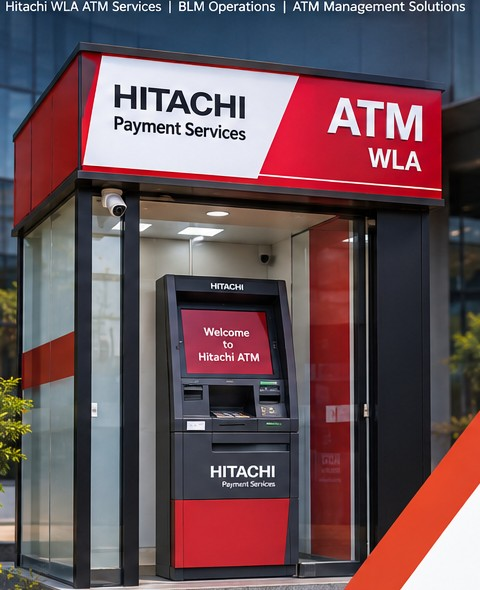

BLM Operations
Field-level operational support including First Level Maintenance (FLM) and Second Level Maintenance (SLM).
From WLA ATM sourcing to end-to-end field support, ACFC E-Services India Pvt. Ltd. supports reliable ATM operations across Eastern and North-Eastern India.

HITACHI WLA ATM Illustrative visualFounded in 2018, ACFC E-Services India Pvt. Ltd. began as a Master Franchise for Hitachi Payment Services WLA ATMs. We have sourced more than 400 WLA ATMs across West Bengal, Assam and the North-East.
In 2024, we became a Super Master Franchise for Hitachi and expanded our work through the BLM Project, supporting ATM performance, upkeep and field operations.
Discover our journey ↗Operational services delivered under the Hitachi BLM Project to help maintain ATM readiness and encourage transaction growth.
Field-level operational support including First Level Maintenance (FLM) and Second Level Maintenance (SLM).
ATM site cleanliness and upkeep to maintain a welcoming customer environment.
Site checks and operational audits supporting service standards and issue identification.
RNM support for ATM infrastructure, repairs and ongoing maintenance requirements.
On-ground service initiatives focused on increasing transactions at Hitachi service ATMs.
Started business as a Master Franchise for Hitachi Payment Services WLA ATMs.
Sourced more than 400 WLA ATMs across West Bengal, Assam and the North-East.
Became a Super Master Franchise for Hitachi and began BLM Project operations.
Supporting BLM services across all seven North-Eastern states, West Bengal and Odisha.
Our Hitachi BLM Project service footprint spans nine states across Eastern and North-Eastern India.
Eastern & North-Eastern India
BLM PROJECT SERVICE COVERAGELeadership focused on growing the company’s field operations and business relationships.
Founder, Managing Director & CEO
90% company shareholdingDirector
Interested in collaborating or learning more about our ATM operations and services? We'd love to hear from you.
Email Our Team ↗